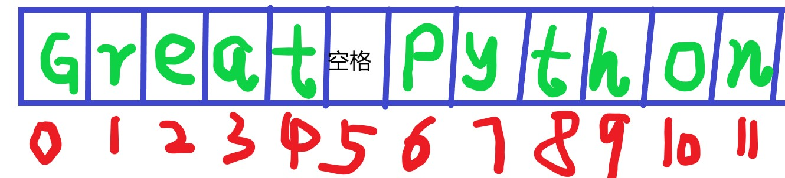

开篇
之前已经提到过，在Python中，一共有六大数据类型

本期就开始学习Python的六个标准数据类型中的字符串。
什么是字符串
在Python中，字符串是用一对引号（单引号/双引号均可）包裹起来的一串字符，比如之前你见到的'Hello World !'便是一个字符串。
下面再给出几个字符串的栗子：
Python提供了type()函数用于查询某个变量的数据类型，在上图中，数据类型名字后面的英文就是该数据类型所对应的type()函数返回值，()内填写的是你要查看的变量名。
接着上面的栗子，现在我要查看一下这些变量所保存元素的数据类型(不能你说是字符串就是字符串吧，我要亲自动手验证一下，嘿嘿)

验证完毕，返回值是str，是字符串无误！
注意，一个单个的字符也是字符串：
1 | ch='u' |
你可能会好奇，这里出现的函数，返回值和class是什么鬼。不要着急，后面会讲到，现在你只要会用type()来查看一个变量的数据类型就达到足够了
如何选取字符串中的某些元素（重点）
首先要说明的是，Python的下标(也称索引)是从0开始的，这和大部分编程语言是一致的。
下面这张图清晰的展示了下标与元素位置的关系：字符串'Python'的长度是6，下标的最大值是5，正好差1。

现在，将字符串'Python'存入变量s ：
1 | s='Python' |
如果想要获取中的某一个字符，直接使用s[下标]即可：

注意，如果你给的下标值超出了字符串的下标最大值，则会报错，就像下面这样：
知道了如何选取字符串中的某一特定下标处的元素之后，你可能又会想：我能不能一次选取好几个元素呢？
当然可以！
Python的切片便是用来做这件事情的。
切片语法如下：
1 | s[start:end:step] |
解释一下：s是一个存储了字符串的变量名，start和end分别代表了切片的开始位置下标和结束位置下标+1，step是步长，如果不写step，那就用默认值1。
（【注】Python规定，step不能为0，这一点记住就好，无需深究。）
下面的栗子可以让你更好的理解上面所说：
1 | s='Great Python' |
这里，从下标为0的位置元素开始，一直到下标为2的位置结束，由于我们没有写step，所以使用默认值1，也就是一步一步地向前走（规范化地表述是：从start开始，以1为步长，向end方向扫描）。
最终将下标区间[0,2]位置的所有元素选取出来。
一个比较好的记忆方式是：start和end组成的区间是左闭右开的。
如果我们更改了步长，又会怎样？看下面的栗子：
1 | s="Great Python" |
这一次设置了步长为2，选取的下标范围是0到8。

s[0:9:2]所做的事情如下(结合上图来理解)：
1 | 第一次选取下标为`0`处的元素`G`接下来走`2`步，到达下标`2` |
至此，选取结束，返回由G、e、t、P、t组成的字符串'GetPt' 。
相信通过以上详细的讲解，你已经学会了使用字符串中简单的切片语法。
还有一件更神奇的事情：下标可以为负数！
你可能会问：下标为负数的话不是没有对应元素了嘛？就像下面这样：
事实不是这样的！
负数索引，指的是从最后一个元素开始，往前数(也就是倒着数，比如-1代表倒数第一个)。所以下面这张图才是正确的：

继续之前的栗子（仔细看注释哦）：
1 | s='Python' |
对于切片操作同理，这里给出几个栗子：
1 | s="Great Python" |
如果仔细观察，你会发现，上面所有的栗子中，start都是小于end的，那能不能出现start>end呢？
答案是可以！但同时需要将步长step设置为负，否则选取到的结果一定是空！
1 | s='Graet Python' |
更多字符串操作
定义一个字符串：
1 | s='Hello World' |
1.求字符串长度：使用len()函数
1 | s='Hello World' |
2.选取全部元素
1 | #方法1 |
3.选取倒序的全部元素
1 | #`切片`特有的操作 |
附
本期内容到这里就结束了，关于字符串的用法还没有讲完，剩余内容将在下期介绍。
在结束之前，简单介绍一下print（）。
print()用于正如其名，用于输出结果到屏幕上。
将'Hello World!'输出到屏幕上，只需将这个字符串放进()内，运行即可：
1 | print('Hello World!') |
()内也可以放入变量：
1 | s='Hello World!' |